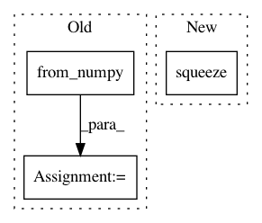

d5b0cd8e7960c247bb7c5b7c832358f8831780fb,ch15/03_train_trpo.py,,,#,90
Before Change
traj_states = [t[0].state for t in trajectory]
traj_actions = [t[0].action for t in trajectory]
traj_states_v = Variable(torch.from_numpy(np.array(traj_states, dtype=np.float32)))
traj_actions_v = Variable(torch.from_numpy(np.array(traj_actions, dtype=np.float32)))
if args.cuda:
traj_states_v = traj_states_v.cuda()
traj_actions_v = traj_actions_v.cuda()
traj_adv_v, traj_ref_v = calc_adv_ref(trajectory, net_crt, traj_states_v, cuda=args.cuda)
mu_v = net_act(traj_states_v)
After Change
// critic step
opt_crt.zero_grad()
value_v = net_crt(traj_states_v)
loss_value_v = F.mse_loss(value_v.squeeze(-1), traj_ref_v)
loss_value_v.backward()
opt_crt.step()
In pattern: SUPERPATTERN
Frequency: 3
Non-data size: 3
Instances
Project Name: PacktPublishing/Deep-Reinforcement-Learning-Hands-On
Commit Name: d5b0cd8e7960c247bb7c5b7c832358f8831780fb
Time: 2018-04-29
Author: max.lapan@gmail.com
File Name: ch15/03_train_trpo.py
Class Name:
Method Name:
Project Name: kymatio/kymatio
Commit Name: 82c6a31ddcd1ced474c5d6620b2053f9db600e5e
Time: 2020-02-18
Author: edouard.oyallon@ens.fr
File Name: examples/1d/plot_real_signal.py
Class Name:
Method Name:
Project Name: eriklindernoren/PyTorch-YOLOv3
Commit Name: b591a7aecce5b8de42a0dd7bba62780675d34fce
Time: 2019-04-30
Author: eriklindernoren@live.se
File Name: utils/datasets.py
Class Name: ImageFolder
Method Name: __getitem__